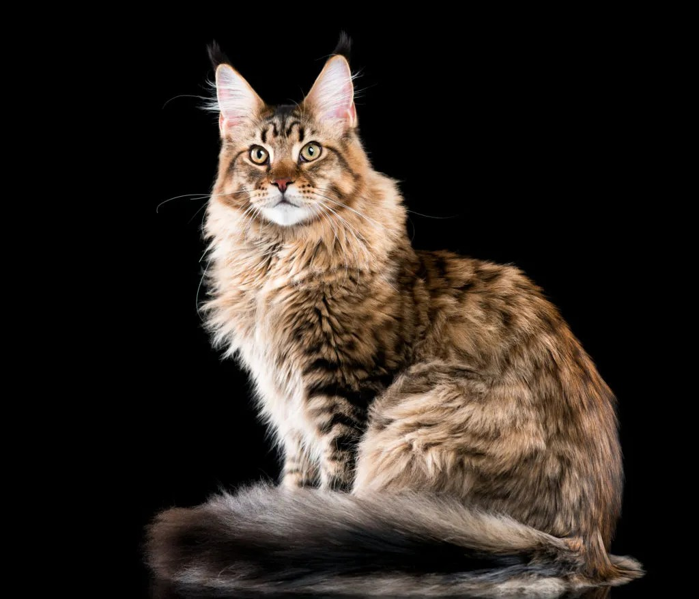
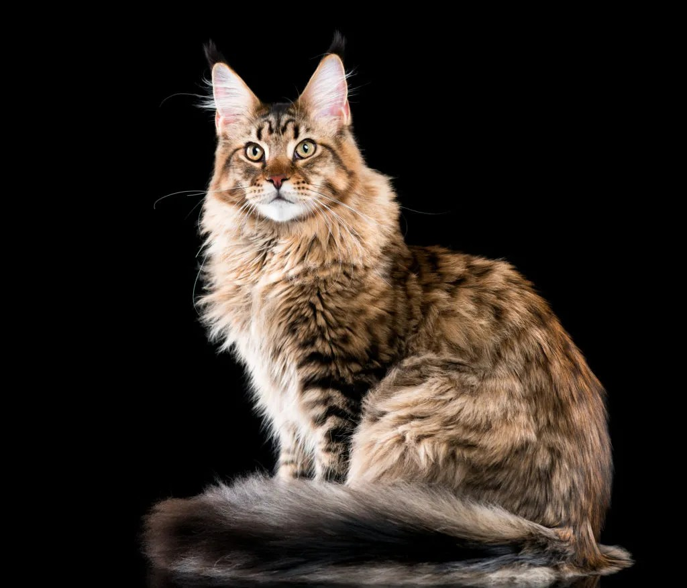
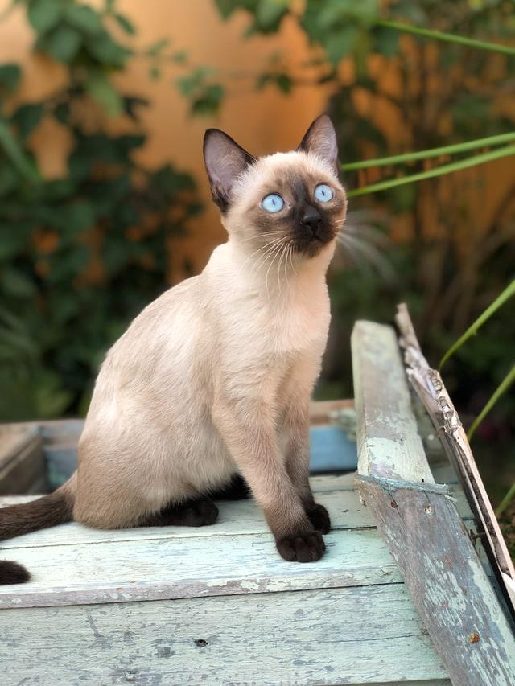
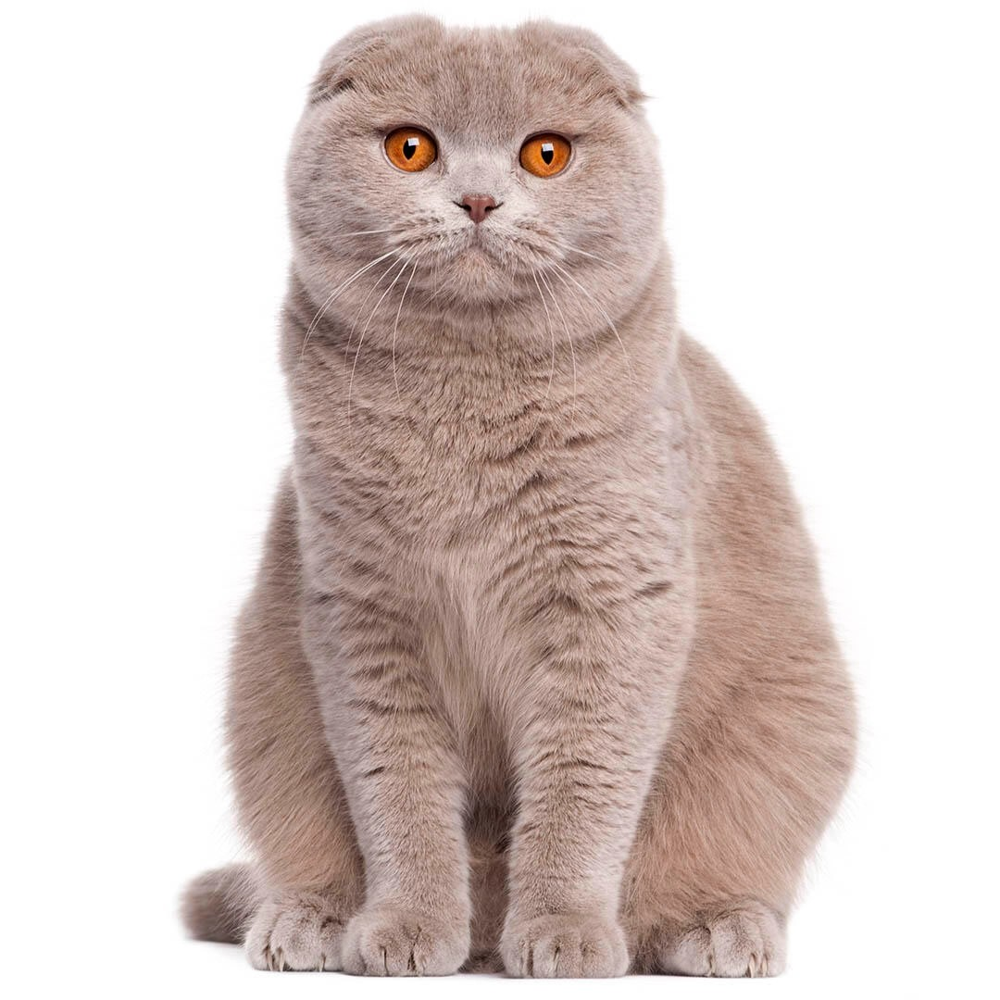

Maine Coon
The Maine Coon is known for its large size, rugged appearance, and long, shaggy coat. They are often called the "gentle giants" of the cat world.
The Maine Coon is known for its large size, rugged appearance, and long, shaggy coat. They are often called the "gentle giants" of the cat world.
Siamese cats are recognizable by their striking blue almond-shaped eyes and color-point coats. They are known for being very vocal and affectionate.
The distinguishing feature of the Scottish Fold is its unique ears, which fold forward and downward, giving the head a rounded appearance.
